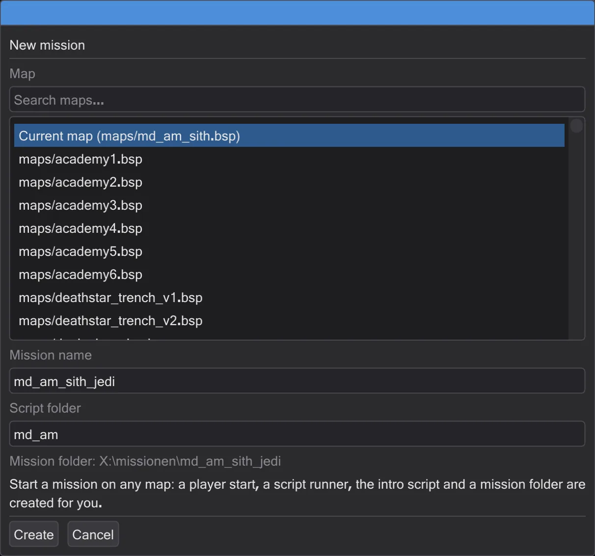
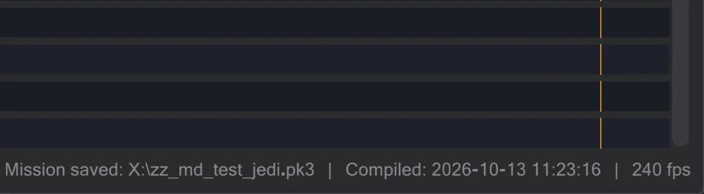
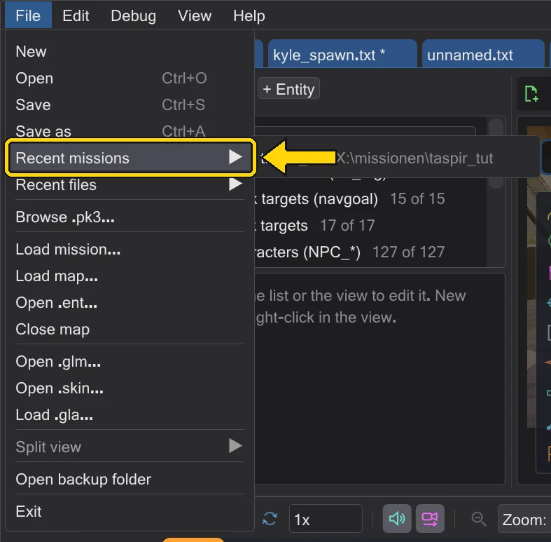

Your own mission
From an empty map to a mission the game loads: create it, add an intro, check it and pack it into a .pk3.
Steps#
- 1
Create the mission. In the map tab press New mission (or the card on the start page). Pick a map, type a name such as
md_test_jediand press Create.
The new mission dialog. - 2
Look at what was made. A player start, a script runner and the intro script are placed; the intro is open in a tab. The mission name stands in the map toolbar.

The fresh mission. - 3
Write the intro. Add a camera shot (A first cutscene) and a figure that walks (A figure walks). Everything goes into the intro script.
- 4
Open Save mission. Press Save mission. The dialog lists every file that goes into the archive and checks the mission.

The checks before saving. - 5
Fix what is red, then save. Errors must go (for example a script an entity uses but that does not exist); warnings may stay. Save writes
zz_md_test_jedi.pk3into the game folder.
Saved - the message shows where. - 6
Play it. Start the game, open the console and type
devmap md_test_jedi. Next time, File → Recent missions opens the whole project again.
The mission in the recent list.